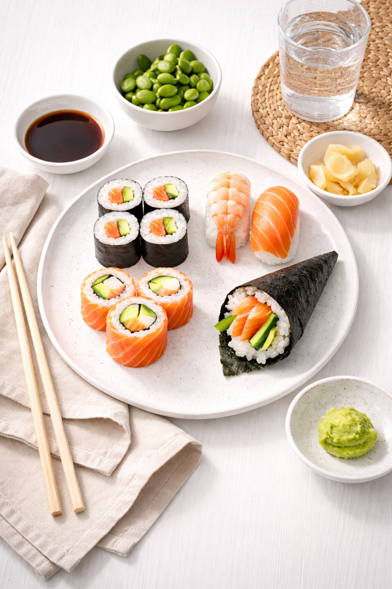
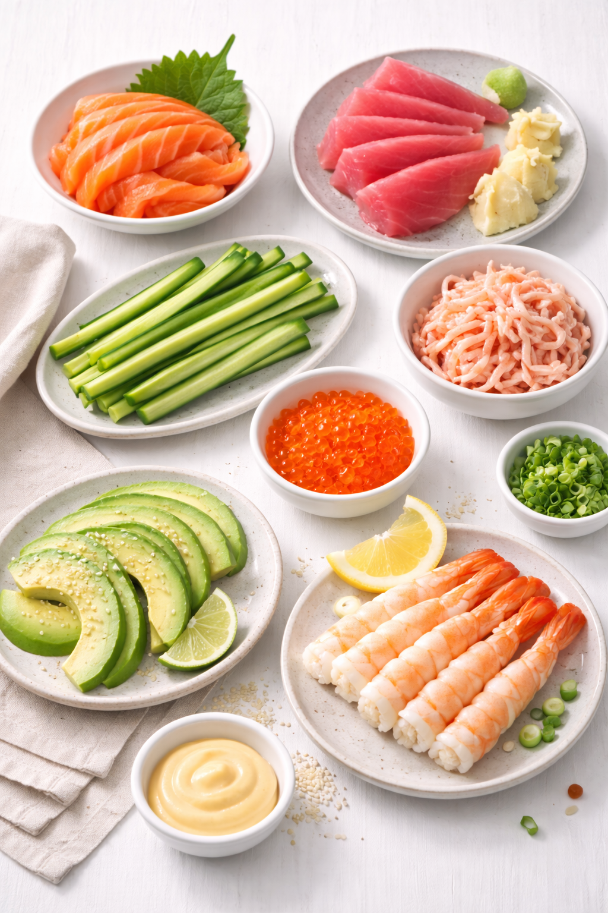

Sushi bei IKEA
Mach’s dir einfach. Wähle Reis, Belag und deine Lieblings-Soße. Ob klassisch, vegan oder ganz individuell: Mit dem IKEA Sushi-Konfigurator gestaltest du deine eigene Sushi-Kreation, ganz nach deinem Geschmack. Schritt für Schritt, so wie du’s magst.
Mach dein Sushi so einzigartig wie du selbst! Wähle Reis, Füllung und Soße – und sieh direkt, wie dein persönliches Sushi entsteht. Ob klassisch mit Lachs, vegan mit Tofu oder ganz verrückt mit Mango und Chili – du entscheidest. Einfach, schnell, lecker. Plane dein Sushi selbst – Schritt für Schritt.
Jetzt konfigurieren

Wähle die Form deines Sushi – klassisch, rund oder quadratisch. Jede Form bringt ihren eigenen Charme und Geschmack mit sich.
Wähle deinen bevorzugten Reis – klassisch, braun oder mit Reisreif. Jeder Reis bietet eine einzigartige Textur und Geschmackserlebnis.

Wähle aus einer Vielzahl von frischen Zutaten – von zartem Lachs über knackiges Gemüse bis hin zu exotischen Früchten. Kombiniere nach Lust und Laune!
Unser Sushi wird ausschließlich aus regionalen Zutaten hergestellt – vom Reis über das Gemüse bis zum frischen Fisch.Keine weiten Wege, keine Kompromisse: nur ehrliche Qualität aus deiner Umgebung.
Zum den lokalen Sushi-Kreation
Manchmal muss es einfach schnell gehen – aber lecker darf’s trotzdem sein.Unsere vorgefertigten Sushi-Boxen sind frisch zubereitet, perfekt portioniert und sofort bereit zum Genießen. Ob klassisch mit Lachs, vegan mit Avocado oder bunt gemischt – du wählst, wir rollen.

Der zeitlose Favorit für alle, die Sushi so lieben, wie es sein soll.Feinster Lachs, knackige Gurke, cremige Avocado und ein Hauch gerösteter Sesam vereinen sich zu einer harmonischen Komposition – frisch, ausgewogen und rund im Geschmack. Ob fürs Mittagessen im Büro oder den gemütlichen Abend zu Hause – diese Box bringt japanische Balance in deinen Tag.


Unsere Klassik Box für Zwei bietet eine ausgewogene Auswahl aus 24 frisch zubereiteten Sushi-Stücken. Von klassischen Maki mit Lachs und Gurke über feine Nigiri mit Lachs und Thunfisch bis hin zu abwechslungsreichen Rolls wie Rainbow Lachs, Futo Lachs Avocado und California Cooked Tuna – perfekt zum Teilen und Genießen zu zweit.

Dann wird’s Zeit, dein Sushi zu finden! Ob individuell im Konfigurator oder fix & fertig mit unseren Sushi-Boxen – frisch, lecker und genau nach deinem Geschmack.